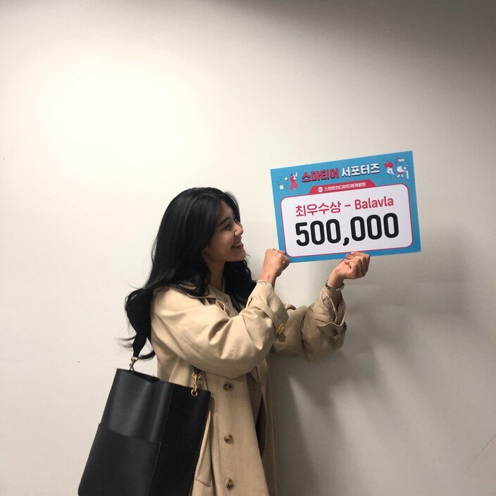

‘꼴등이어도 재밌으면 됐지 뭐~!’ 아마 이 말이 두 달간 서포터즈로 활동하면서 저희 Balavla 팀의 모토가 아니었나싶습니다! 매주 주어지는 미션과 순위평가제로 가끔은 재미를 잃고 순위에 전전긍긍 할 때도 있었지만 그때마다 이 말을 생각하며 팀원들과 최고의 팀워크를 만들어 낼 수 있었던 것 같습니당!ㅎㅎ 더불어 영우쌤과 운비쌤을 비롯한 홍보팀 선생님들의 금손들 덕분에 부족했던 미션들이 조금 더 완성도 있어질 수 있었던 것 같아 너무 감사드립니다...ㅎㅎ?
-
정말 ‘우연히’ 들은 빅데이터 수업이 ‘우연하게’ 서포터즈의 기회를 가져왔고, 그리고 최종우승까지 하게 되어 올해 정말 잊지 못할 경험이 될 것 같습니다. 그리고 무엇보다 중요한 것은! 이 모든 활동들을 하면서 항상 행복했고 즐거웠다는 점입니다! 각자 4인 4색의 팀원들과 담당선생님이신 영우쌤까지, 서로가 서로의 시너지효과가 되어주었던 것 같아 뿌듯합니당ㅎㅎ?
-
두 달전 서포터즈를 지원하던 순간으로 다시 돌아갈 수 있다면, 망설임 없이 다시 서포터즈에 지원할 것 같습니다ㅎㅎ 이번이 스마티어 서포터즈 1기였지만, 나중에 2기도 진행한다고 하니 스마트미디어인재개발원 수업도 듣고 서포터즈도 하시는 걸 추천드립니당!!ㅎㅎ 그리고 마지막으로 두 달간 고생해준 팀원들과 스미인 선생님들께 정말 감사드리고 정말 잘 놀다갑니다!!ㅎㅎ
